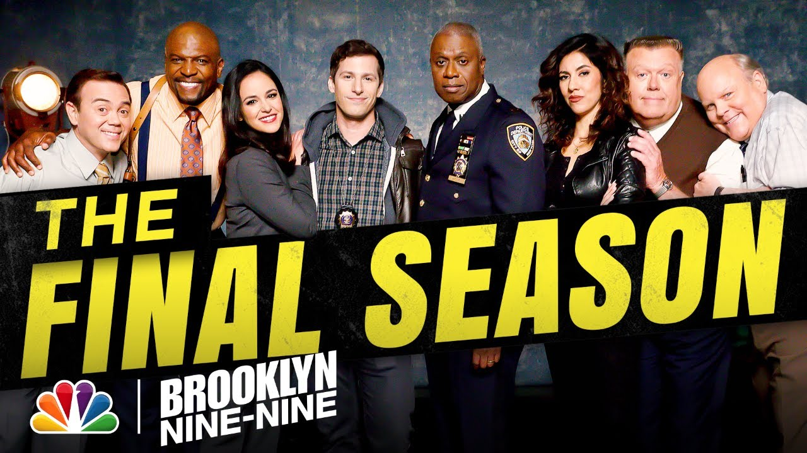

3/10/21 // Tags: B99 || Misc.
Brooklyn 99 Season 8
NBC announced that final season of B99 will premiere on August 12.
Brookyln Nine-Nine, the only show in the trifecta still airing, will return from its 16-month hiatus this August to premiere its eighth and final season.
Save the date for Season 8, Nine-Niners. The final season of #Brooklyn99 arrives Thursday, August 12 on @NBC. pic.twitter.com/RLYKyEbxxP
— Brooklyn Nine-Nine (@nbcbrooklyn99) May 20, 2021
So we can definitely expect the show to touch upon the Black Lives Matter movement in the new season, and considering how the show had previously touched upon police brutality and bias with the Season 4 episode "Moo Moo," we can definitely expect them to deal with the sensitive topic thoughtfully and delicately.
The final episode of the seventh season, "Lights Out," concluded on April 23, 2020, with the birth of Jake and Amy's son, McClane "Mac" Peralta-Santiago. Following an epic blackout, a freakout on a horse, and enough bleeped-out profanity to make a nun laugh, the episode was a satisfying and action-packed way to end the 13-episode season.
In this new season, we can expect to see how the precinct manages the pandemic. In an interview with the The Hollywood Reporter, Showrunner Dan Goor said "We think there is a value to escapism, but at the same time, we don't want to be ignorant. There is a debate about what next year will look like. I don't think anybody wants us to, nor do we want to, have our characters toiling away in the depths of the pandemic. I don't think that's the direction we'll go in... But the question is how they have been affected by the virus and the pandemic as New York City residents and as first responders in New York City. How do we keep the show funny? How do we do that while still making them of this world and of their world? It's challenging."
Of course, there will also be plots about Jake and Amy managing working while being parents to baby Mac. And as with any season of Brookyln Nine-Nine, we can definitely expect guest stars—fans have their fingers crossed that Bruce Willis, who plays John McClain, Jake's favorite character and his son's namesake, will make a cameo—and returning characters—like the Pontiac Bandit. Of course, there will be the classic hijinks and trouble and hopefully another heist episode.